-8.3kg
／ 3ヶ月で
「体が軽くなりました。」
3人目の出産を機にどんどん体重が増え、何をやっても痩せませんでした。 こちらに通い始めて、食事と整体を組み合わせる本当の意味が分かり、 3ヶ月で8.3kgが自然に落ちました。 何より「体が軽い」感覚が嬉しいです。
30代女性／産後ダイエット
国家資格・理学療法士が教える
リバウンドしないダイエットLINE講座

★ 既に 1,200名以上 の女性が学んでいます
こんなお悩み、ありませんか？
ひとつでも当てはまったあなたへ。
これから先、知っているか・知らないかで、3年後の体は劇的に変わります。
痩せないのは、努力が足りないからでも、
意志が弱いからでもありません。
40〜50代の女性の体は、
20代と同じやり方では、絶対に痩せません。
ホルモン、自律神経、筋肉、代謝。
体の中では、想像以上に大きな変化が起こっているからです。
必要なのは、根性ではなく「正しい知識」。
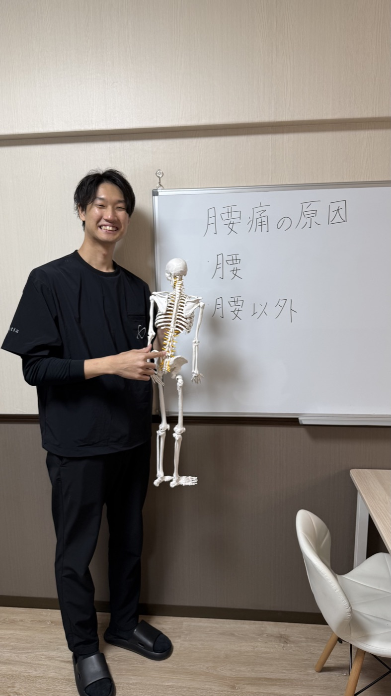
骨格模型を用いた院内レクチャーの様子
40代以降、体が痩せにくくなる原因は
大きく分けて3つあります。
女性の基礎代謝は、20代をピークに10年で約100kcalずつ低下します。 つまり、40代になった時点で、20代と同じ量を食べているだけで、毎日200kcalが余ってしまう計算です。
筋肉は、何もしなければ30歳を過ぎてから年1%ずつ減少していきます。これを「サルコペニア」と呼びます。 筋肉が減ると基礎代謝も連動して下がり、痩せにくく太りやすい体に。
更年期前後は、女性ホルモンの減少が自律神経のバランスを大きく崩します。 冷え・むくみ・睡眠の質低下が連鎖して、代謝そのものが落ちてしまいます。
つまり、40〜50代の女性が痩せないのは、
「やり方」がずれているだけなのです。
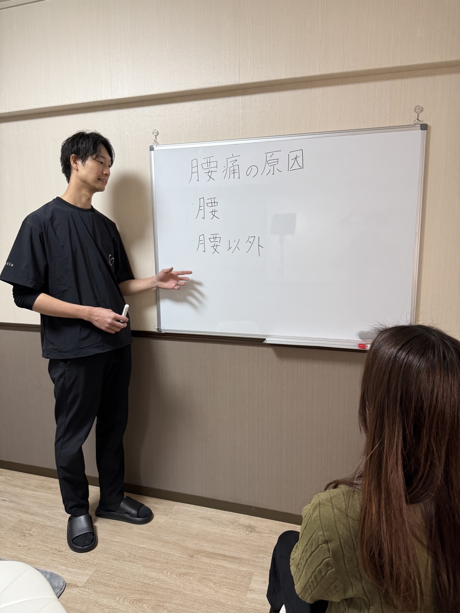
食事内容を一緒に振り返るカウンセリング
短期的には体重が落ちて見えても、
食事制限だけのダイエットには4つの落とし穴があります。
食事量を急に減らすと、体は脂肪より先に「筋肉」をエネルギー源として使い始めます。結果、基礎代謝はさらに低下。
「飢餓状態」を経験した体は、次に食べた食事を最大限脂肪として蓄えようとします。元の体重以上に戻る方が大半です。
無理な食事制限はストレスホルモン（コルチゾール）を増やし、自律神経を乱します。睡眠の質、肌、メンタルにも悪影響。
必要な脂質・タンパク質が不足すると、ホルモンの材料が足りなくなり、更年期の症状（ほてり・倦怠感）が悪化します。
大切なのは、抜くことではなく
「いいもので体を満たしてあげる」こと。
これが、リバウンドしない体づくりの第一歩です。
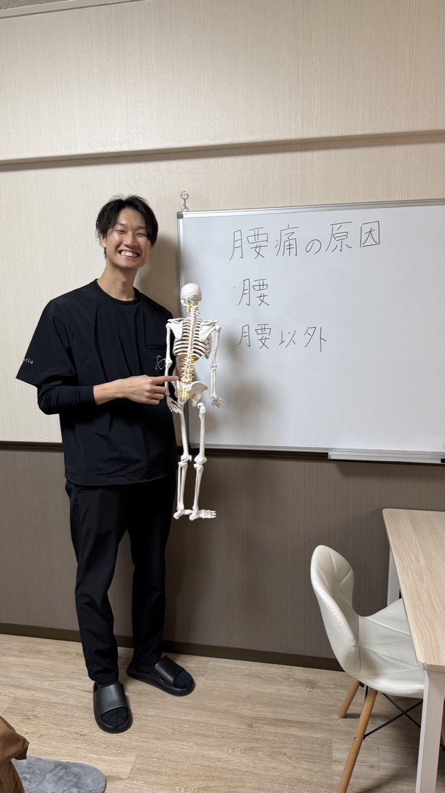
「痛みのある部位に原因はない」という考え方
累計1万5000件以上の臨床データから分かった、
40〜50代女性のための「もう一つの真実」があります。
骨盤が後ろに倒れると、内臓が下垂し、お腹の前にせり出します。どんなに食事を制限しても、姿勢が崩れている限り、お腹は引っ込みません。
背骨や骨盤がゆがむと、胃・腸・腎臓の位置がずれ、消化吸収・排泄機能が低下。便秘やむくみの慢性化につながります。
背骨周りが固まると、その内側を通る自律神経の働きが乱れます。冷え・睡眠の質・代謝のすべてに直結する見落とされがちな盲点です。
体の「外側」と「内側」、
両方を整えてはじめて、
40代・50代でも自然に痩せる体に変わります。
講師プロフィール

Tomohisa Tsutsui
整体院誠天 東加古川院 院長
病院でリハビリ職として勤務していた7年間、私は数えきれないほどの患者さんと向き合ってきました。
そこで何度も目にしたのが、「もう良くなることはない」と諦めていく女性たちの姿でした。
腰痛、肩こり、冷え、むくみ、そして体型の変化。 病院では「年齢のせい」「体質ですね」で終わってしまう症状ばかり。
＿＿ 本当にそうなのか？
解剖学を学び、神経・筋膜・関節の仕組みを臨床で確かめ続けた結果、私はある確信に至りました。
「正しい知識と、正しい施術があれば、人は何歳からでも変われる」
一人でも多くの女性に、
諦めなくていい未来を届けたい。
その想いで、整体院誠天 東加古川院を開きました。
整体院誠天 東加古川院 院長
筒井 智久
VOICE OF OUR CLIENTS
3人目の出産を機にどんどん体重が増え、何をやっても痩せませんでした。 こちらに通い始めて、食事と整体を組み合わせる本当の意味が分かり、 3ヶ月で8.3kgが自然に落ちました。 何より「体が軽い」感覚が嬉しいです。
30代女性／産後ダイエット
50歳を過ぎてから、何もしていないのに毎月1kgずつ増えていく恐怖。 ここで「自律神経」と「整え方」を教わって、人生で初めてリバウンドなしで戻れました。
50代女性／更年期
食事の量はほとんど変えていないのに、お腹からスッキリ。 骨盤の歪みのせいで内臓が下がっていたと知って、衝撃でした。
40代女性／産後の体型崩れ
長年の腰痛を治しに行ったつもりが、体重まで落ちて驚いています。 体が痛くないだけで、運動も食事も前向きに取り組めるようになりました。
50代女性／慢性腰痛
むくみがすっと取れて、まず顔の輪郭が変わりました。 毎日のLINE配信が、生活の小さなご褒美になっています。
40代女性／むくみ・冷え
※効果には個人差があります。
OUR CLINIC
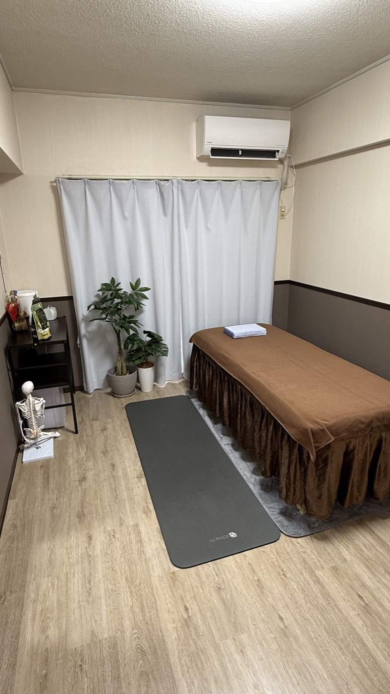
完全個室の施術室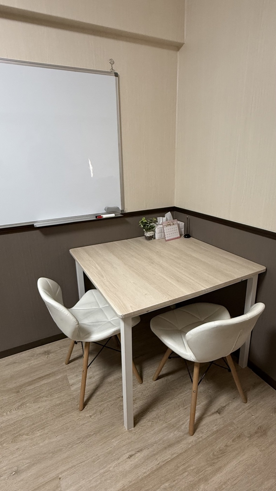
じっくりお話を伺うカウンセリングスペース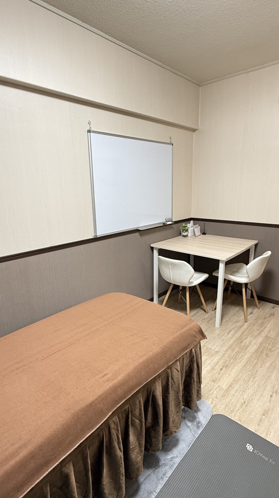
プライベート空間で気兼ねなく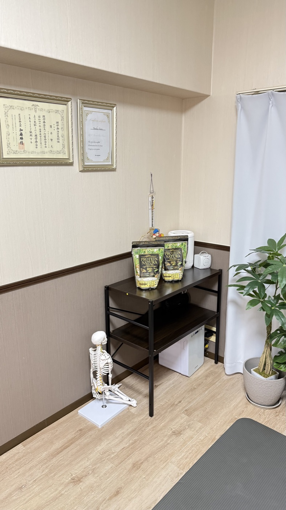
国家資格・各種認定証東加古川駅から徒歩6分
仕事帰り・お買い物のついでに通えます。
近隣に提携駐車場あり
お車でのご来院も安心。
9:00〜21:00 営業
土日祝も診療しています。
初回返金保証
万が一ご満足いただけなければ全額返金。
TREATMENT
筋膜リリース・関節矯正・神経整体を組み合わせた、
オーダーメイドの施術です。痛みが苦手な方も安心。
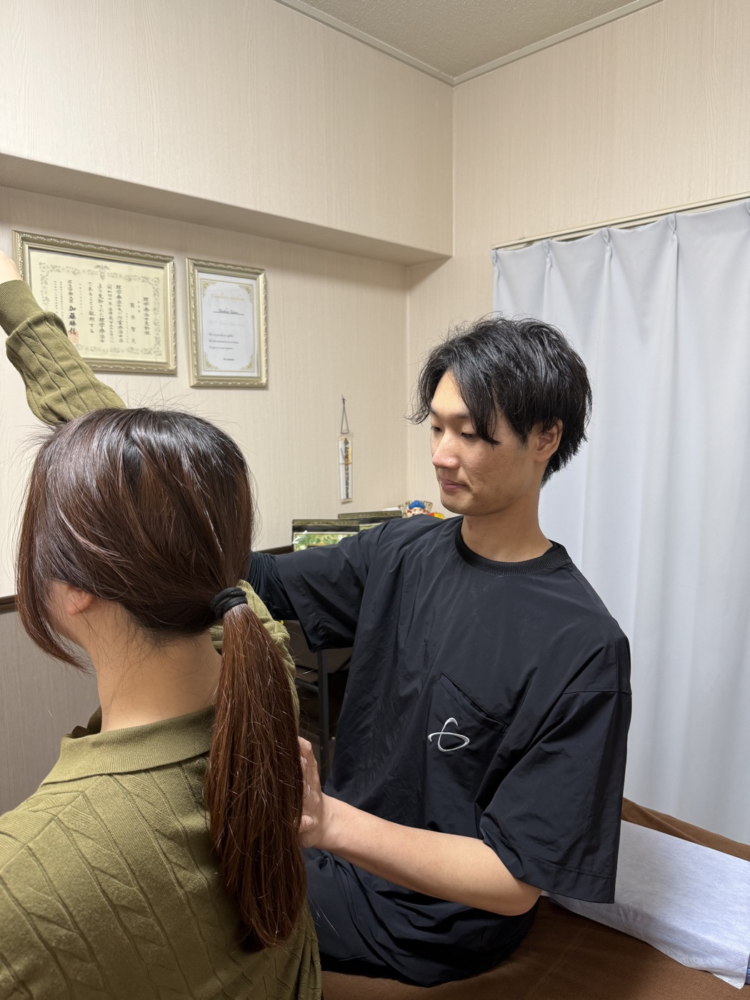
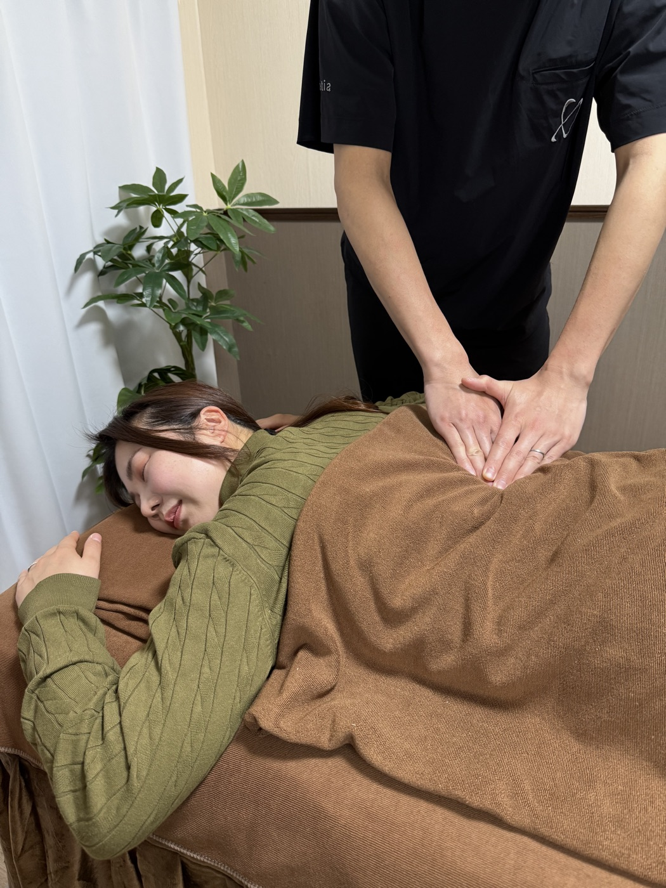
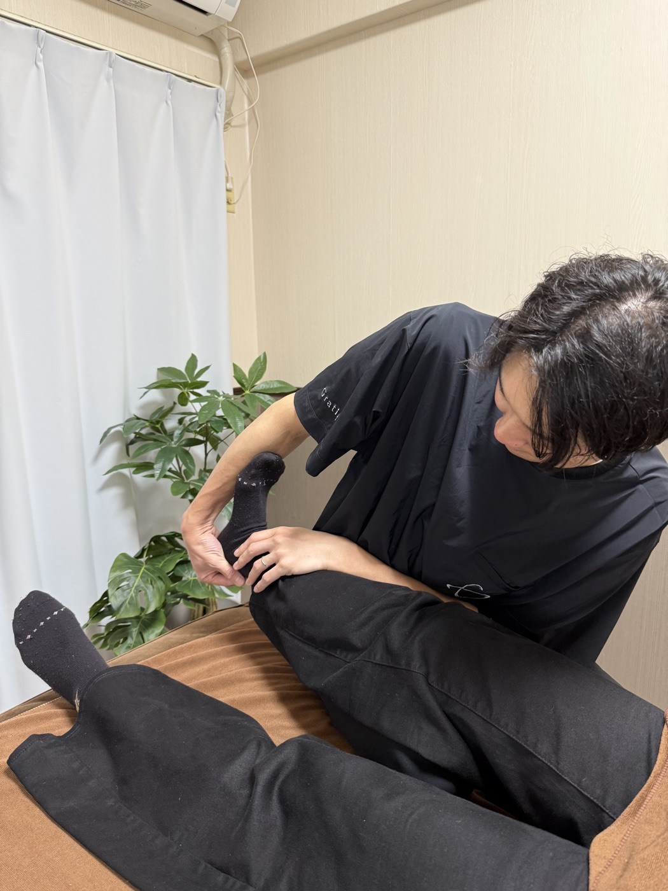
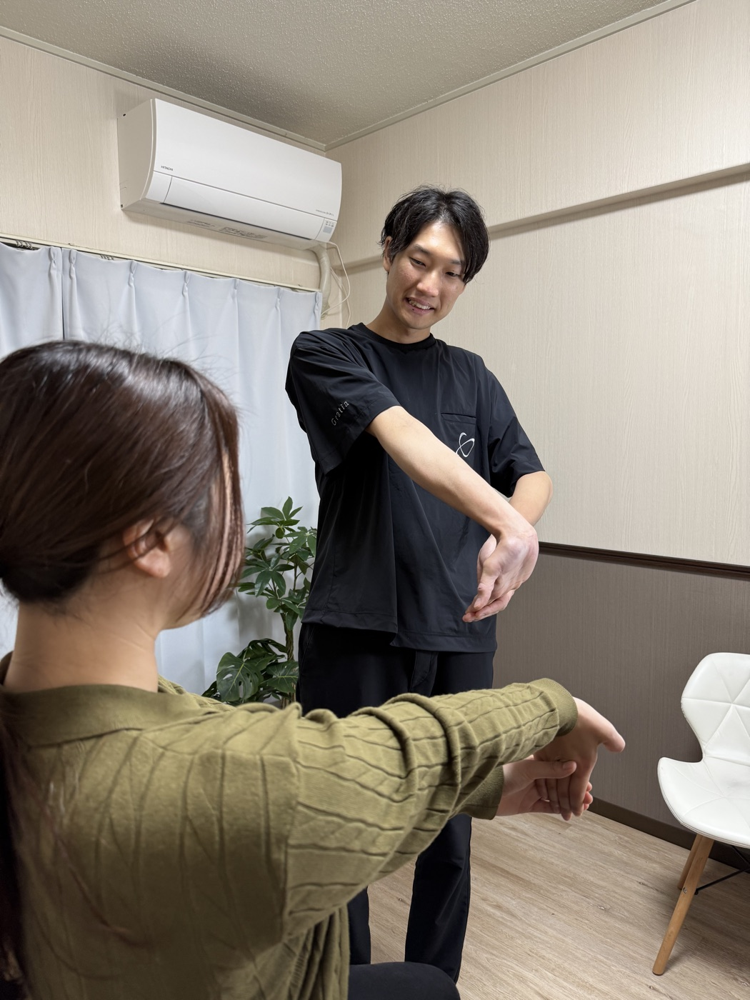
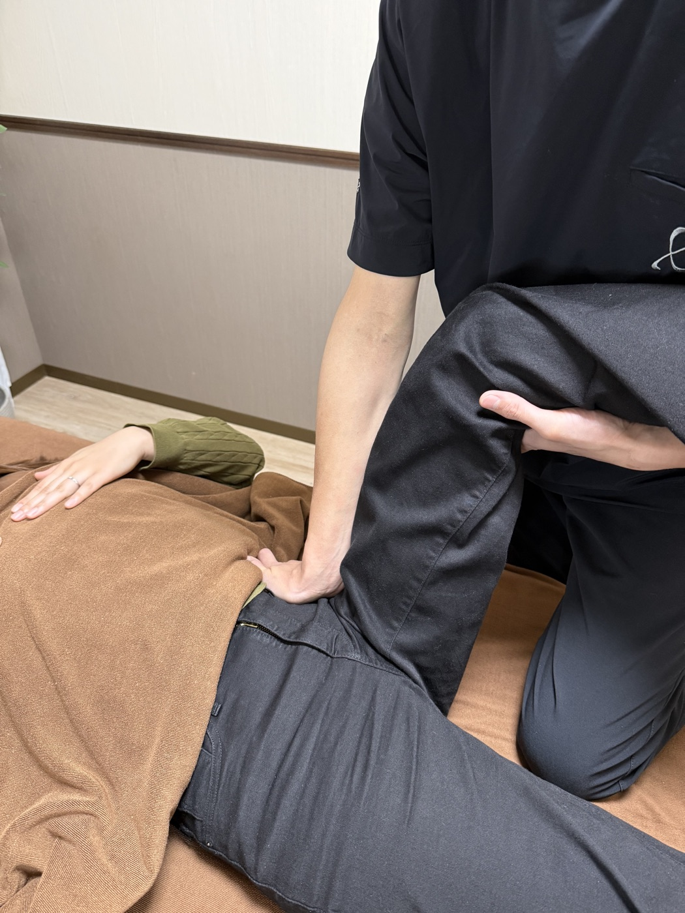
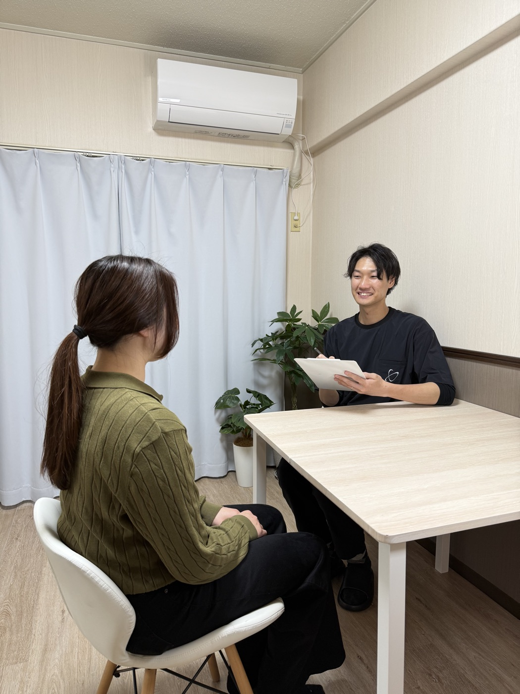
FREE LINE LESSON
整体院誠天で実際にお伝えしている内容を、
ぎゅっと凝縮してLINEで配信。完全無料です。
抜くのではなく整える。リバウンド0の食事の作り方を、医学的根拠とともに。
布団の中から始められる、自律神経を起こす目覚めの整え方。
女性ホルモンの減少を補う、摂るべき栄養素と避けたい食習慣。
1日5分でできる、巡りを良くする習慣。下半身むくみの解消に。
「腸の掃除屋」食物繊維を、いつ・どれだけ摂るとダイエットに効くか。
姿勢が崩れると、なぜお腹が出るのか。寝ながらできる骨盤リセット。
挫折を防ぐ、生活への落とし込み方。「明日からの自分」を変える小さな仕掛け。
毎日の食事と体重をシンプルに記録。可視化でモチベーション継続をサポート。

理学療法士として、私は思っています。
「知らないだけで、苦しんでいる女性が多すぎる」と。
年齢を重ねた体は、確かに変わります。 でも、変化の正体と正しい付き合い方を知っていれば、 ダイエットも、人生も、もっと軽やかになるはずです。
だから、まずは無料で。
この7日間の知識が、
あなたの3年後・10年後の体を、必ず変えていきます。
強引な営業や、しつこい勧誘は一切いたしません。
合わないと思えば、ブロックでいつでも終了できます。
HOW TO START
「LINEで友だち追加」ボタンから、公式アカウントへ。
追加ボタンを押すだけ。アンケートも入力も不要です。
毎朝、1日1通のペースで7日間お届けします。
＼ 今だけ・期間限定の無料公開 ／
40代・50代の女性のために、
理学療法士が監修した7日間のLINE講座。
登録30秒・完全無料・いつでも解除OK。
よくあるご質問
はい、LINE講座のコンテンツ配信は完全に無料です。途中で有料コンテンツの押し売りもございません。
一切ありません。配信は1日1〜2通のペースで、知識のお届けが中心です。整体の予約は、ご希望があった時のみご案内します。
はい、LINEの通常のブロック機能でいつでも解除できます。理由を聞かれることもありません。
もちろん登録自体は可能ですが、内容は40〜50代女性のホルモン・更年期・骨盤などにフォーカスしています。男性の方は参考程度にご活用ください。
個人差はありますが、講座の内容を実践いただいた方の多くは1週間で1〜2kgの体重変化を実感されています。3ヶ月で5〜8kg減という方も少なくありません。
いいえ。LINE講座だけでも十分に学んでいただける内容です。さらに本格的に体を整えたい方には、東加古川院での施術もご案内しています。
もちろんです。LINE講座は全国どこからでも受講いただけます。配信は文字と動画でお届けするため、お住まいの地域は問いません。
講座は医学的根拠に基づく一般的な情報をお届けします。治療中の方は、内容を参考にしながら、必ずかかりつけ医にご相談のうえお取り組みください。
A LETTER FROM TSUTSUI
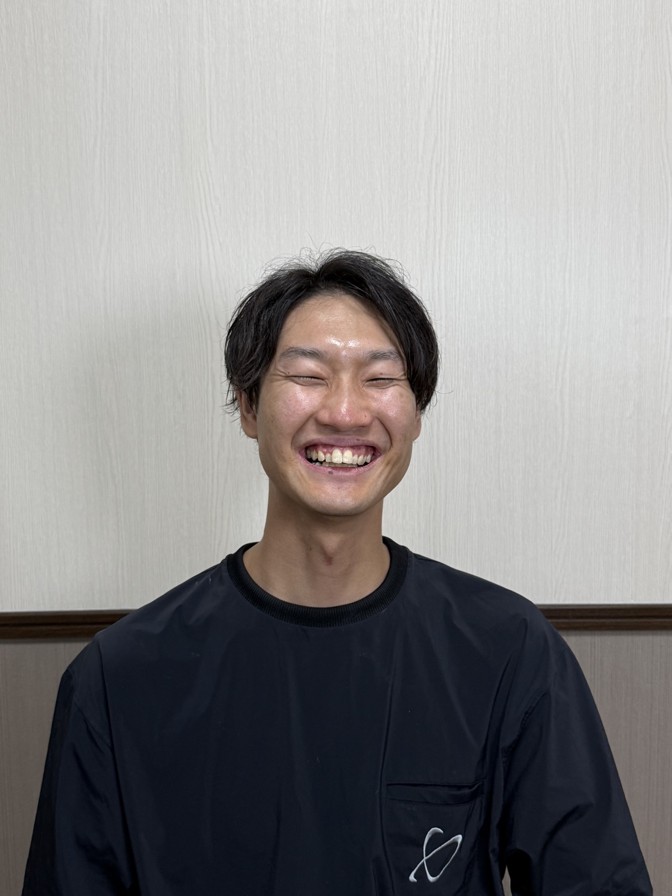
ここまで読んでくださって、ありがとうございます。
私が病院で出会った40代・50代の女性たちは、みな本当に頑張り屋さんでした。 家族のために、子どものために、ずっと自分を後回しにしてきた方ばかりです。
だからこそ、ようやく自分のために時間を使えるようになった今、
「自分の体に、最高のケアをしてあげてほしい」と思います。
人生100年時代、40代・50代はまだ折り返し地点。
体型に、健康に、人生に、諦めるには早すぎます。
正しい知識さえあれば、必ず変われます。
まずは無料のLINE講座から、一歩踏み出してみませんか。
7日後、きっと体が「軽い」と感じてくれるはずです。
整体院誠天 東加古川院 院長
理学療法士 筒井 智久